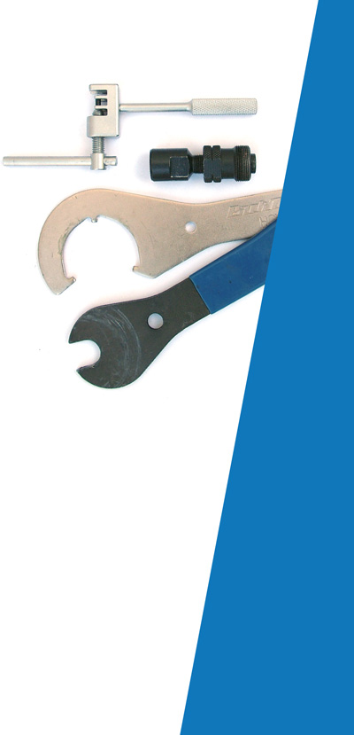

Based in North Bristol, covering close by areas, high quality
service and repairs at very competitive prices.
Get your bike checked and sorted at your own convenience. It will be
ready when and where you want it, whether it is at your home or office.
Call-out prices depending on location • FREE safety check
Puncture: £5 labour + £5 inner tube • Brakes / Gears service: £10
Overall check-up, gears and brakes tuned, chain checked and
lubricated, wheels and tyres inspected, brake pads checked / fitted
All the above plus wheels checked and trued (rims and hubs serviced).
Drivetrain greased. Headset and bottom bracket checked.
All the above plus bike stripped to the frame, cleaned and all parts
regreased. This service needs to be performed at my workshop.
Prices exclude part costs.
